The below were my original questions when reading, I updated them because I realized we didn’t have access to all the data available to us in the final project yet. These questions will be more useful when we have that data set for the final project and can look at the intersection of illegal zoning practices, wealth disparity and housing shortages
What is the correlation between the number of houses that are illegal by zoning laws and the density of housing within a city? That is to say, are cities that are zoned illegally actually providing the most housing equity? The motivation for this question was from the reading and realizing that Somerville only has 22 properties that actually meet zoning requirements. This led me to wonder whether cities that follow zoning laws better are actually more likely to be zoned in a way that exacerbates housing inequities and low supply. It would be super interesting to see how we can visualize these two things
Do richer areas tend to have more or less zoning exemptions? On the one hand I would expect areas where median income is high to have the most exceptions, since people with more money often have more capital to get around zoning laws, but I also have a theory that denser areas are poorer and are more likely to not meet zoning standards (as was discussed in the article about somerville that I read). It would be interesting to see if wealth is bending the rules in a way that only benefits the wealthy!
How much available housing could we create by rezoning areas of a city that are currently zoned for things other than housing? This question doesn’t come from the reading I read, but instead my life growing up in the Boston area. Housing insecurity has always been on the forefront of my mind, and as I got older it became clearer how out of sync this city is with the needs of its population. I grew up with friends talking about the need to stay poor to qualify for section 8 housing, because if they made too much money they couldn’t afford to live here. Since COVID, Boston, like most major cities, has struggled with empty office and laboratory space. We are now in a unique position where we have the opportunity to rezone these areas and allow housing. While transitioning office space into residential housing isn’t cheap, I believe it is necessary and wanted to understand how much additional housing we could generate
New Questions that can be answered with existing data sets
Does single-family zoning actually reduce housing density, or is it just another way to restrict housing supply? One of the biggest takeaways from the reading was just how much land is locked into single-family zoning, even in places where housing demand is through the roof. If so much land is reserved for single-family homes, it makes me wonder—are these areas actually less dense, or are they just forcing housing scarcity? If we could visualize how single-family zoning correlates with population density, we might get a better sense of whether this type of zoning is really doing what it claims or if it’s just a tool to keep housing supply low.
Are wealthier municipalities more likely to be dominated by single-family zoning? I have two conflicting theories about this. On the one hand, richer towns might have the highest percentage of land zoned for single-family housing because restrictive zoning has historically been used to keep housing prices (and barriers to entry) high. But on the other hand, it’s possible that rich homeowners also have the resources to push for zoning exemptions that allow them to build what they want—meaning they could actually have more zoning flexibility. By mapping out income levels against zoning restrictions, we could get a better picture of whether zoning works in favor of wealthier areas or if it restricts everyone equally.
How much more housing could we create if we rezoned single-family areas to allow multifamily housing? Boston has a massive housing crisis, and it’s frustrating to see how much of the city is locked into zoning rules that don’t reflect the need for more housing. Growing up here, I heard so many stories about families struggling to afford to stay, and it always seemed like the city just wasn’t keeping up with demand. Given how much land is still zoned for single-family homes, I want to understand just how much housing potential we’re losing. If we rezoned even a portion of this land to allow multifamily housing, how many more homes could we actually build? Mapping this out could give a concrete sense of how much change is possible.
Discoveries & Insights
Phase 1: Data overview
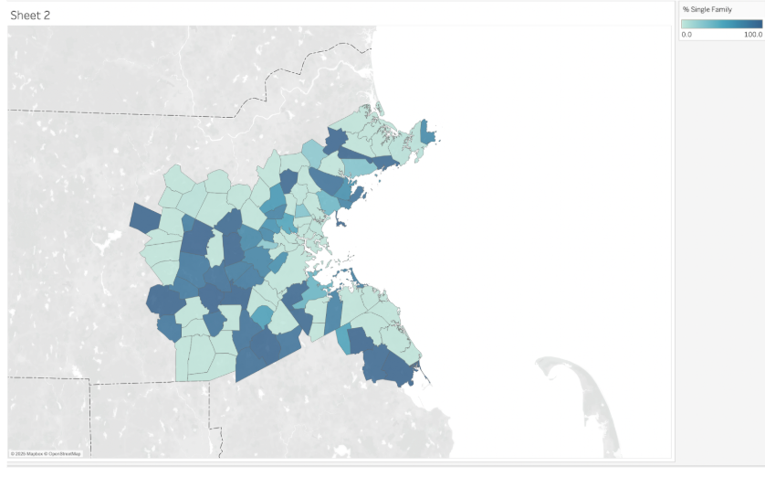
"% Single Family" Zoning by Municipality
I began my analysis by loading the geo data file and the zoning file into Tableau to ensure that I was comfortable with the dataset. They joined as expected on Mun_id, a common column in both datasets. I then wanted to make sure that the latitude and longitude corresponded correctly with my understandings of the map of the area and the findings seemed consistent with my expectations.
The first thing I noticed was that the variables were broken down at the city level, so there was no variability within a city. This is a limitation of the data set that we can't see individual zip codes or the larger municipalities in a subdivided fashion. I used the "Only Single Family" variable for testing to create a variant but was immediately struck by how many 0s were in the dataset, and confused what this meant for our dataset.
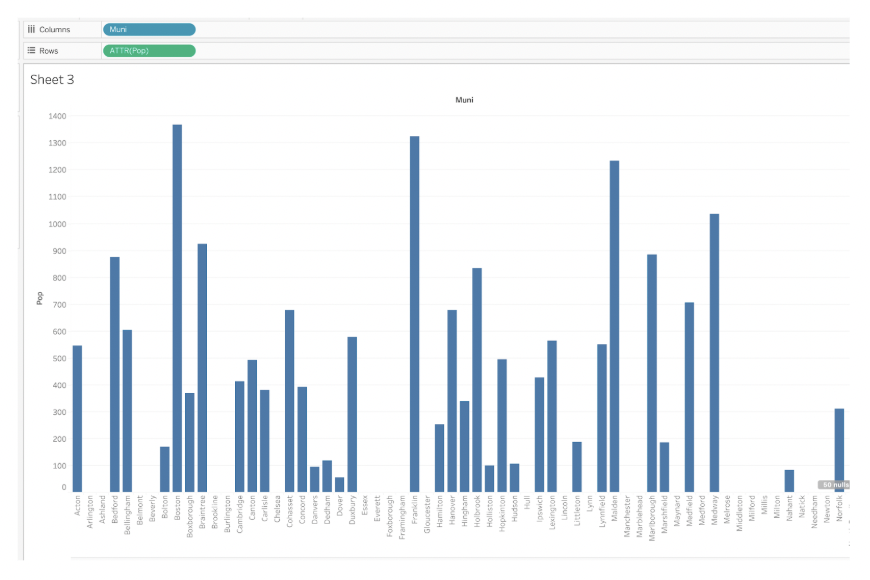
Bar Chart of Population by Municipality
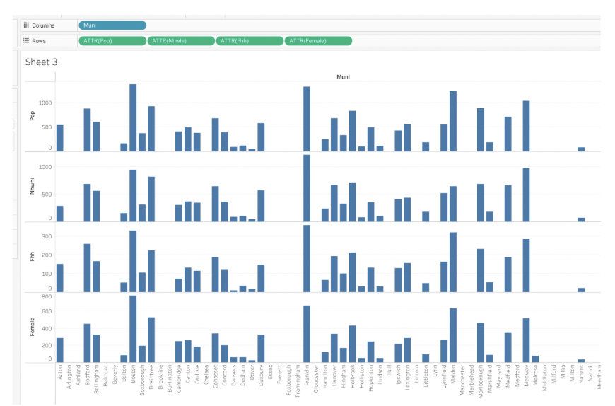
Bar Chart NHWHI, Fehh, Female counts per municipality
As I continued investigating, I built a bar chart to explore the missing values and patterns in the data. One of the most striking findings was that many cities had missing population data. The y-axis values were in the thousands, which initially made me wonder if the missing values indicated a complete absence of census data rather than just missing population figures. To verify this, I checked other fields like NHWHI (Non-Hispanic White), Fhh (Female-headed households), and Female populations, which all exhibited the same pattern of missing data. This seemed really strange to me that we would be missing so much data, so I looked into it further.
As part of this section of my analysis, I examined the variables present and they were as expected. Age, race, sex and population came from the census data and I noticed they were counted in the thousands by the labels on the y-axis.
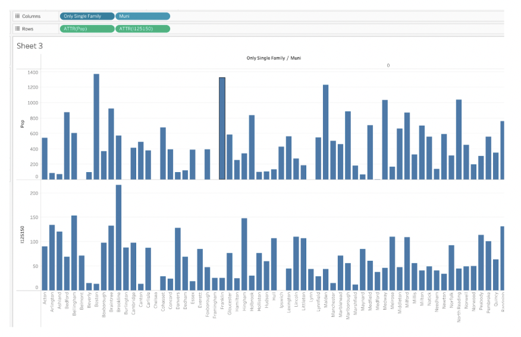
"Pop" as a dimension with "only single family" used as a filter
Eventually, I realized the problem with the data after playing around with the data types and figuring out that the problem appeared when I used the attribute categorization, and not the dimension categoriation. After doing some research on Tableau, I realized it was occuring because two rows of the dataset contained conflicting information, and most municipalities in the dataset appears twice. This happens because the dataset is structured to compare differences based on "Only Single Family" zoning. This explains why so many fields appeared to have missing values at first glance. Now, the next step is to adjust the analysis accordingly and ensure that comparisons account for this duplication.
Now that I have a better understanding of how the data is organized, I felt confident moving on to investigating my questions. However, I am still left wondering why there were so many 0s in the original "% Single Family" variable that I explored, since that wasn't an attirbute problem and was actually 0s in the underlying data. It makes me wonder if maybe there are municipalities that don't allow single family zoning? This doesn't really make sense to me though, because a lot of the towns with 0s are wealthy towns where I would imagine a lot of the housing is single family.
Phase 2: Question Investigation
Does single-family zoning actually reduce housing density, or is it just another way to restrict housing supply?
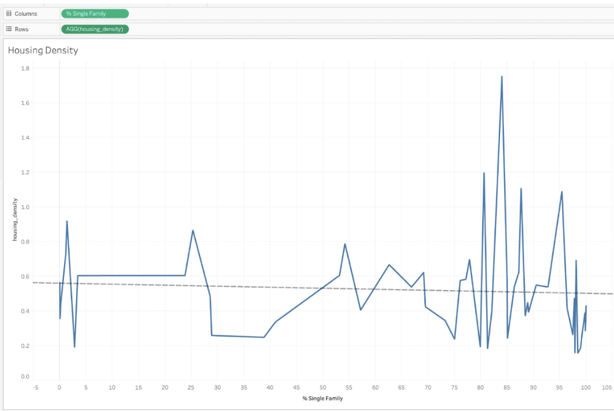
"% Single Family" by Housing Density Line Graph
I began to investigate this question by trying to define a "housing density" variable, since this was the main focus of the question was how does zoning relate to housing density and whether it helps. I defined the variable as sum[Pop])/SUM([Hh]). This should tell us for places that have a higher housing variable there are less households relative to the population, indicating less housing density. But I ran into problems where the data didn't follow that pattern . I expected to see some sort of correlation where the higher the percentage of Single Family homes the higher the housing variable, but the opposite trend was shown.
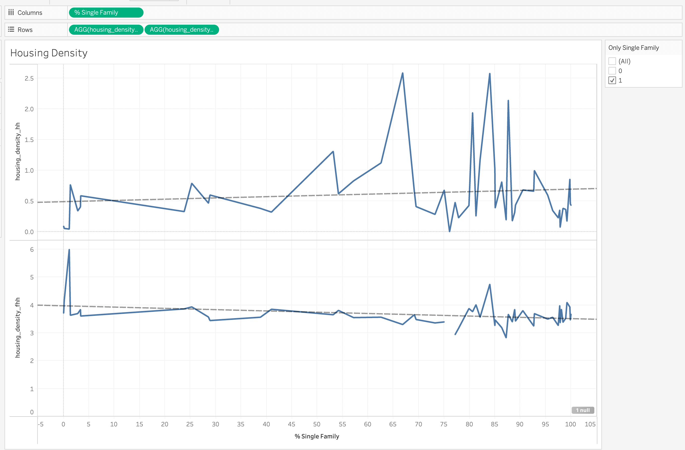
"% Single Family" by Housing Density (HH) and Housing Density (FHH) Line Graph
I realized that I didn't only look at Single Family Zoning = 1, which was silly after noticing that we had to do this every time we looked at municipalities (see above). I therefore updated my results to include that filter. I also realized that there was another way we could define household (using FHH instead of HH) and added a new calculation for that. This better matched my inutition for the hh calculation, where the higher percentage of single family cities had higher defined housing_density, but it didn't for FHH.
This made me realize that there were significantly different numbers for FHH and HH even though they are defined the same in the metadata. After looking more closely, it seems like the numbers for households calculated by income groups is much larger, and more recent, than the households calculated from the census. This is another interesting learning and angle to explore. However, since the FHH data was so much smaller, and intuitively didn't make sense to me given what I know about these towns (there are more than 68 households in Belmont), I decided to use HH as my source of truth.
To explore this question further, I would like to investigate the size of some of these areas, which maybe could be calcuated from their latitudes and longitudes and see how defining density by land and population changes things. Households is a hard definition to use, since we would expect it to be somewhat synonymous with houses, especially where zoned for single family homes. I think this would be a better avenue to explore this question.
Are wealthier municipalities more likely to be dominated by single-family zoning?
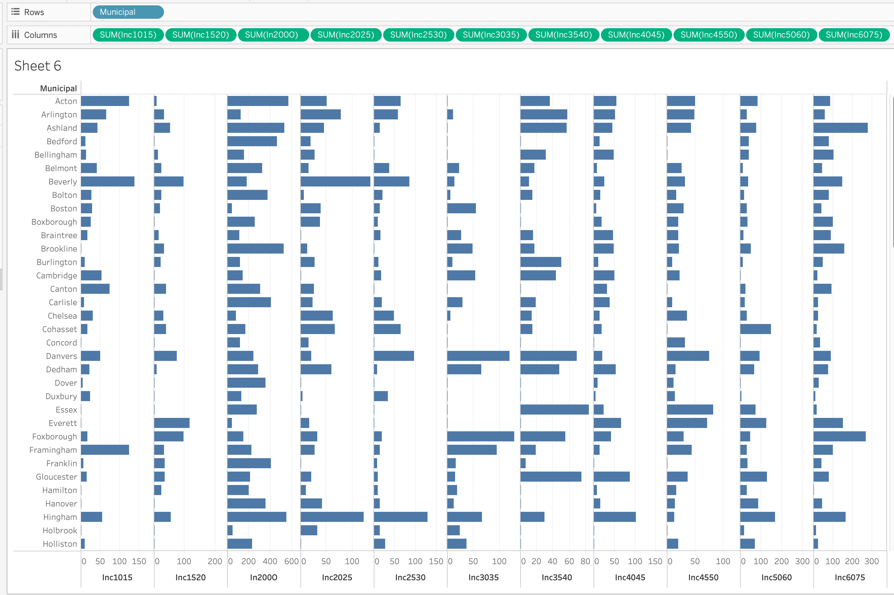
Municipality and Households per income bracket
Similar to above, I focused on using HH for households, but I decided against using population here. I thought using one data source (income data, not census), would provide the cleanest comparison here. I then had to define how I wanted to look at wealth here. We have income broken down by how many households fall into which income bracket. Which is interesting, but when I attempted to visualize it, I really struggled to draw much meaning from the bar graph. I also couldn't figure out how to layer in the single-family zoning aspect of things, which is critical to my thesis statement.
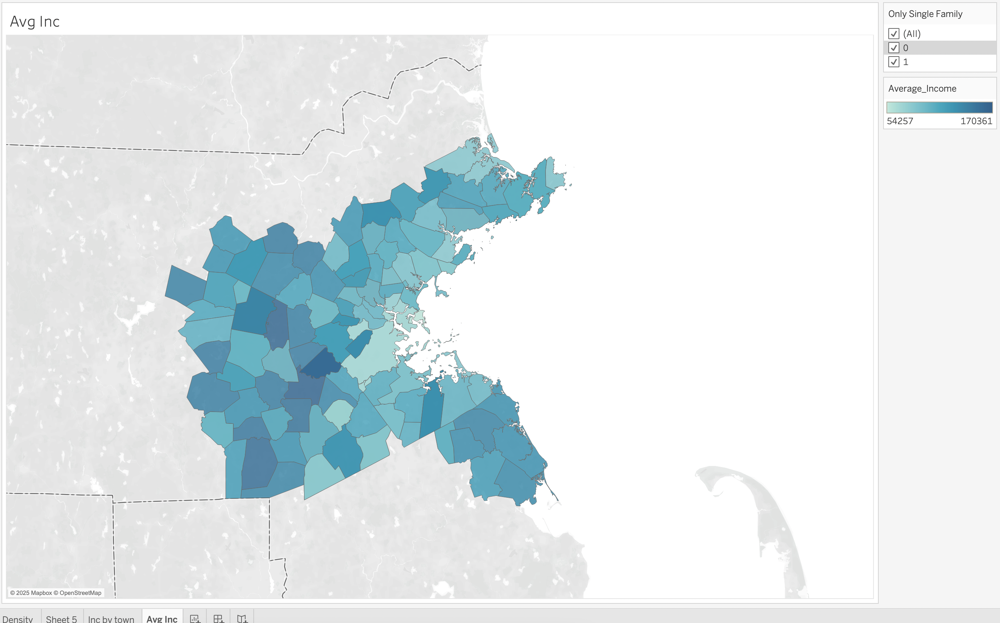
Average Income by Municipality
Because the income buckets were so unwieldy to work with, I decided to try another tactic. Instead of looking at households in specific brackets, I wanted to get an average income for the entire municipality. To do this, I multiplied each variable by the mid point of the bracket and then summed all the brackets together before dividing by the total number of households. So for example, in the Inc1015 variable I used a value of 12,500 and multiplied this by the value of Inc1015 before summing it across all the variables within that municipality and dividing by the sum of all the other values. This gave me an average wealth for the municipality.
Knowing the Boston area, these numbers seemed aligned with what I expected, which was awesome! Towns like Needham had drastically higher average incomes than towns like Malden.
However, this was still missing the percent single family variable, and I wanted to understand what the correlation looked like there. I knew I could show this on a scatter plot but I wanted to see if I could show it on the map
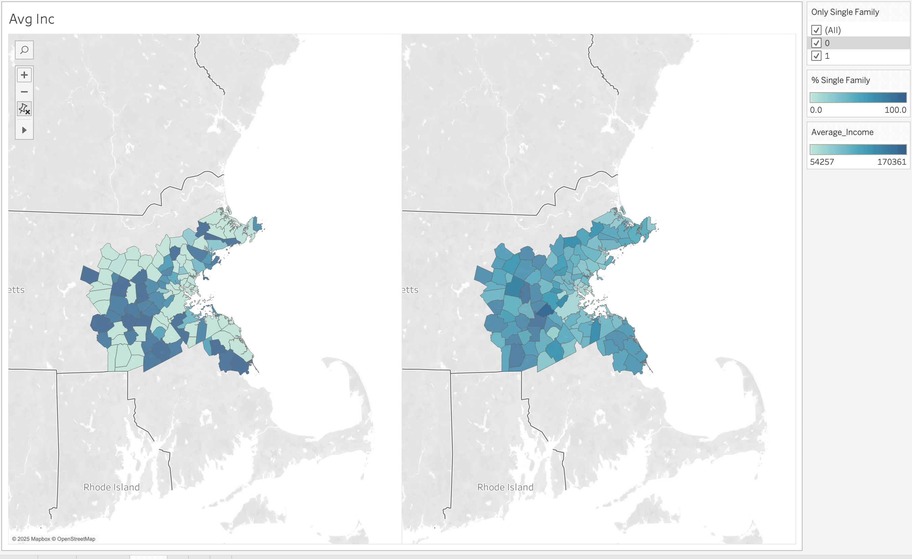
Average Income and % Single Family by Municipality
While this isn't perfect, especially with the 0s in % single family, it is much closer! I love how you can see the darker colors on both maps in the western part of the metro area. There is definitely more to explore here, but the income data seems more manageable than the population numbers and I think there will be lots of trends to uncover!
How much more housing could we create if we rezoned single-family areas to allow multifamily housing?
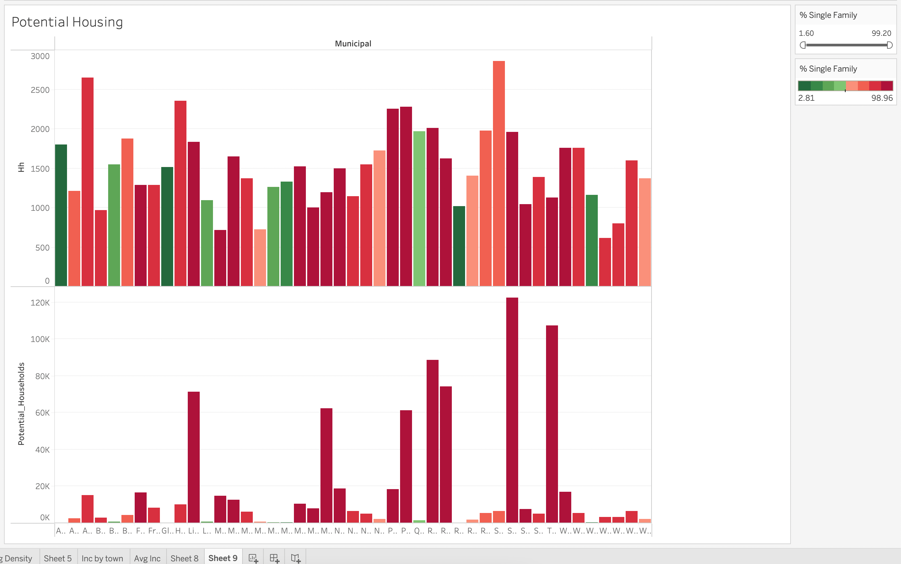
Potential Housing correlated with Single Family Percentages within Municipalities
This is a harder question to answer than just simply creating a visualization in Tableau. The key here is understanding the assumptions we are making and seeing if they are valid. I began by defining a "Potential Housing Units Variable", which looks at how many households there are now (HH) and the percentage of single family zoning, and multiplies the number of households by 1 / (1-%_single_family). This gives us an estimation of how many houses there could be if there was no single family zoning. We can then subtract the existing HH from this to get how many more housees we could create.
The chart above shows the proof of concept that the towns with higher percentages of single family only homes have more housing that they could create if they changed their zoning practices. This is an overly simplistic way of calculating this, since it doesn't account for density of existing homes, even if they are single family. But it shows that the data is good and we can bisect it this way. In order for the calculation to work, we had to remove 0s and 100% as seen in the filter.
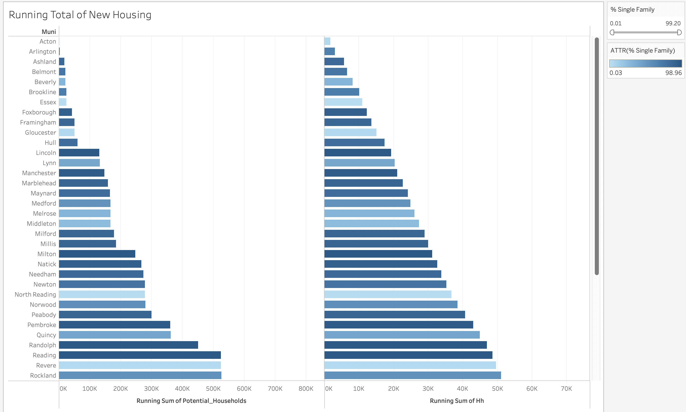
Potential Housing correlated with Single Family Percentages within Municipalities
While the first chart for this question was interesting, it did not necessarily indicate how much more housing we could achieve. To do that I summed the existing houses and compared with the total potential houses using our calculation above. While this did give some cool results (500k new house holds created across 25 towns in Metro Boston), it indicated that the way we were defining potential houses was absolutely an upper bound. There is no way that Boston has the capacity to increase by that number of households, which indicated a flawed methodology. Moving forward, I would like to think of a better way to estimate how many new housing units could be created, but I am worried we would have to have more information on what parts of cities are open for development or rezoning before doing that.
Summary
This was a really interesting experience, getting to work with real zoning data. One of the biggest takeaways is that data is never perfectly clean or easy to interpret, especially when it’s pulled from multiple sources. Understanding the metadata was crucial to making sense of inconsistencies. I also have a lot of questions about how households are defined and how that connects to population data. Working with unfamiliar datasets made it harder than I expected to make accurate calculations and draw clear conclusions. When digging into my questions, I found that zoning’s impact on housing density isn’t always straightforward, especially with inconsistencies in census data and income brackets. At the same time, it was useful to confirm that single-family zoning is closely tied to wealth and housing supply. I had a sense of this already, but it was fascinating to see the data back it up.
Moving forward, I need more data to fully understand what’s happening. Why do some towns report 0% single-family housing? For those, can we estimate based on the number of single-family households? I’m especially eager to analyze data on illegal zoning to better quantify the problem and track whether enforcement is happening—or being ignored. Access to historical zoning changes could also reveal long-term trends. Lastly, I want to explore how race factors into zoning laws in Metro Boston.